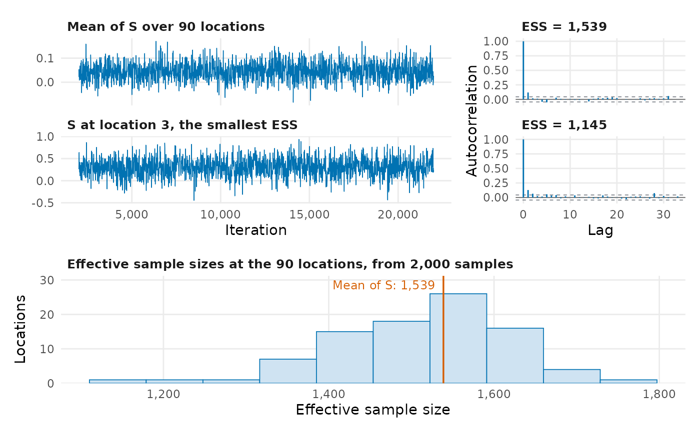
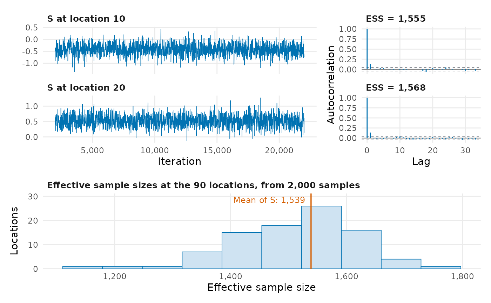

Check the mixing of the MCMC samples of the random effects
Source:R/mcmc_diagnostics.R
plot_mcmc.RdDraws diagnostics of the Markov chain Monte Carlo (MCMC) samples of the random effects stored in a fitted binomial, Poisson or negative binomial model. For the mean of the spatial random effects over the locations, and for the location whose samples have the smallest effective sample size, it shows a trace plot and the autocorrelation function. A histogram of the effective sample sizes at all the locations shows whether some locations mix much worse than the rest.
Arguments
- object
A fitted
RiskMapobject returned byglgpm()for a binomial, Poisson or negative binomial model withreturn_samples = TRUE.- check_mean
Logical. If
TRUE(the default), the chain of the mean of the spatial random effects over the locations is shown.- component
The locations whose chains are shown, numbered as the rows of
object$coords. The default,NULL, shows the location with the smallest effective sample size.- ...
Further arguments passed to
stats::acf(), such aslag.max.
Details
Inspecting the mean \(\bar{S} = \sum_{i=1}^n S(x_i) / n\) avoids
checking every component of the spatial random effect, but poor mixing at
a few locations can be hidden by the average. The location with the
smallest effective sample size is the one most worth inspecting, and the
histogram shows how much the effective sample sizes vary between
locations. The effective sample sizes, of unstructured random effects too,
are returned by summarise_mcmc(), whose help page describes how they are
estimated.
The trace plots show the iterations of the chain at which the samples were
kept, after the burn-in and thinning set by set_control_mcmc(). The
autocorrelation is shown against the lag between kept samples, with
dashed lines at \(\pm 1.96 / \sqrt{N}\) for \(N\) samples. For models
fitted with versions of RiskMap that did not record the burn-in and
thinning, the samples are numbered in order.
Examples
# \donttest{
data(liberia)
liberia <- sf::st_as_sf(liberia, coords = c("long", "lat"), crs = 4326)
fit <- glgpm(npos ~ log(elevation) + gp(), denominator = ntest,
data = liberia, model_crs = 32629, family = "binomial",
messages = FALSE)
plot_mcmc(fit)

plot_mcmc(fit, check_mean = FALSE, component = c(10, 20))

# }